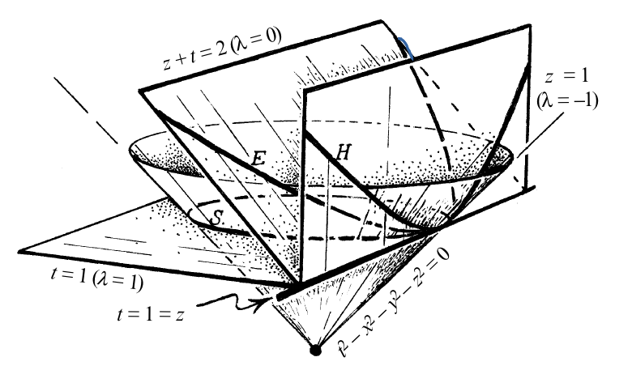

The three models of surfaces can be seen within a common framework.
Let's consider the space $\mathbb{M}^4$, that is, the manifold $\mathbb{R}^4$ with coordinates $(x,y,z,t)$ but with the pseudo-Riemannian metric given in each tangent space by
$$ ds^2=dx^2+dy^2+dz^2-dt^2. $$This space with this pseudo-metric is called Minkowski space, and can be also denoted by $\mathbb{R}^{3,1}$.
This metric is left invariant by the group $O(3,1)$ when acting on $\mathbb{M}^4$. It also leaves invariant the cone
$$ t^2-x^2-y^2-z^2=0 $$so is logical that we pay attention to it, because it is very "physical": the group $O(3,1)$ represents all the change of point of view of a physical observer, that is, rotations and Lorentz boost.
Now, following [TRTR] from Penrose page 423, we can consider the family of hyperplanes inside $\mathbb{M}^4$ given by
$$ z+t+\lambda(t-z)=2 $$intersecting our cone in different 2-dimensional submanifolds $P_{\lambda}$ of $\mathbb{M}^4$.
Here we have a picture from that book, where we consider only $(x,z,t)$ for purposes of drawability.

If we analyse the case $\lambda=0$, we observe that we obtain the submanifold $P_0$, $E$ in the picture with a shape of a parabola, given by the embedding
$$ \phi \colon \mathbb{R}^2 \longrightarrow \mathbb{M}^4 $$ $$ (u_1,u_2) \mapsto (u_1, u_2, 1-\frac{u_1^2+u_2^2}{4},1+\frac{u_1^2+u_2^2}{4}) $$We can look for the (possibly pseudo) Riemannian metric inherited by $P_0$. Since
$$ d\phi=\begin{pmatrix} 1 & 0 \\ 0 & 1\\ -\frac{u_1}{2} &-\frac{u_2}{2}\\ \frac{u_1}{2} &\frac{u_2}{2} \end{pmatrix} $$we conclude that $P_0$ consists of $\mathbb{R}^2$ with the euclidean metric:
$$ g=\begin{pmatrix} 1 & 0 \\ 0 & 1\\ \end{pmatrix} $$That is, although we see it like a parabola, intrinsically is only the Euclidean plane, and that is the reason the latter is sometimes called parabolic geometry.
But, what happens for others $\lambda$? Let's see. We have a far more complicated parametrization of our embedded manifold:
$$ \phi(u_1,u_2)=(u_1,u_2, \frac{-1+{ \lambda }+\sqrt{-(1+{ \lambda })^{2}\left(-1+{\lambda}\left(u_1^{2}+u_2^{2}\right)\right)}}{2{ \lambda }}, $$ $$ \frac{2+{ \lambda }+\sqrt{-(1+{\lambda })^{2}\left(-1+{\lambda}\left(u_1^{2}+u_2^{2}\right)\right)+\frac{1-\sqrt{-(1+{\lambda})^{2}\left(-1+{\lambda}\left(u_1^{2}+u_2^{2}\right)\right)}}{{ \lambda }}}}{2(1+{ \lambda })}) $$(computations made with Mathematica).
If we compute the (possibly pseudo) Riemannian metric in this chart we obtain the inherited metric in $\mathbb{R}^2$
$$ g_{\lambda}=\begin{pmatrix} \frac{1-{ \lambda } u_2^{2}}{1-{ \lambda }\left(u_1^{2}+u_2^{2}\right)} & \frac{\lambda u_1 u_2}{1-{ \lambda }\left(u_1^{2}+u_2^{2}\right)} \\ \frac{\lambda u_1 u_2}{1-{ \lambda }\left(u_1^{2}+u_2^{2}\right)} & \frac{1-{ \lambda } u_1^{2}}{1-{ \lambda }\left(u_1^{2}+u_2^{2}\right)}\\ \end{pmatrix} $$Next step is to show that for $\lambda>0$ we have an isometry into the usual sphere (a model for spherical geoemtry), and that for $\lambda<0$ we have an isometry into a model for hyperbolic geometry. This would justify the terms elliptic and hyperbolic for those geometries, as you can see at the picture above ($S$ and $H$ respectively). In order to keep it simple we can work with $\lambda=1$ and $\lambda=-1$.
For $\lambda=1$, we have
$$ g=\begin{pmatrix} \frac{1- u_2^{2}}{1-\left(u_1^{2}+u_2^{2}\right)} & \frac{ u_1 u_2}{1-\left(u_1^{2}+u_2^{2}\right)} \\ \frac{u_1 u_2}{1-\left(u_1^{2}+u_2^{2}\right)} & \frac{1- u_1^{2}}{1-\left(u_1^{2}+u_2^{2}\right)}\\ \end{pmatrix} $$But if we look at a typical chart of the usual sphere in $\mathbb{E}^3$
$$ \psi: (x,y)\longmapsto (x,y,\sqrt{1-x^2-y^2}) $$and compute the metric we obtain just
$$ g=\begin{pmatrix} \frac{1- y^{2}}{1-\left(x^{2}+y^{2}\right)} & \frac{ xy}{1-\left(x^{2}+y^{2}\right)} \\ \frac{xy}{1-\left(x^{2}+y^{2}\right)} & \frac{1- x^{2}}{1-\left(x^{2}+y^{2}\right)}\\ \end{pmatrix} $$so they are the same.
And for $\lambda=-1$ we have
$$ g=\begin{pmatrix} \frac{1+ u_2^{2}}{1+u_1^{2}+u_2^{2}} & \frac{ -u_1 u_2}{1+u_1^{2}+u_2^{2}} \\ \frac{-u_1 u_2}{1+u_1^{2}+u_2^{2}} & \frac{1+ u_1^{2}}{1+u_1^{2}+u_2^{2}}\\ \end{pmatrix} $$But if we look at the typical model for hyperbolic plane that consists of the pseudosphere embedded in $\mathbb{M}^3$:
$$ x^2+y^2-z^2=-1 $$with a chart given by
$$ \psi: (x,y)\longmapsto (x,y,\sqrt{1+x^2+y^2}) $$we obtain the inherited metric in $\mathbb{R}^2$ (keep an eye: inherited from the Minkowski metric, not the Euclidean one):
$$ g=\begin{pmatrix} \frac{1+ y^{2}}{1+x^{2}+y^{2}} & \frac{ -xy}{1+x^{2}+y^{2}} \\ \frac{-xy}{1+x^{2}+y^{2}} & \frac{1+ x^{2}}{1+x^{2}+y^{2}}\\ \end{pmatrix} $$so we are done.
________________________________________
________________________________________
________________________________________
Author of the notes: Antonio J. Pan-Collantes
INDEX: